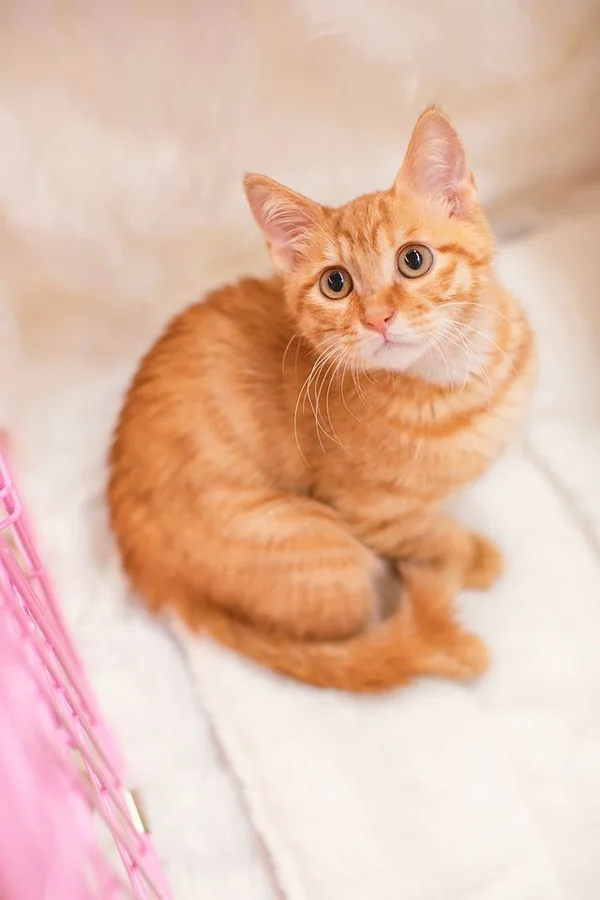
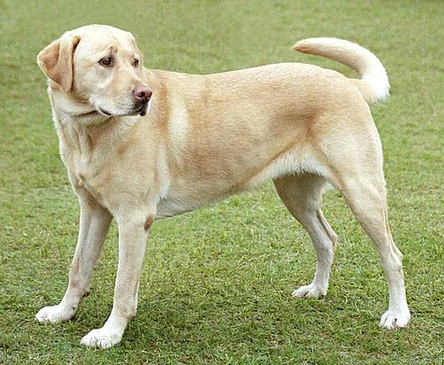
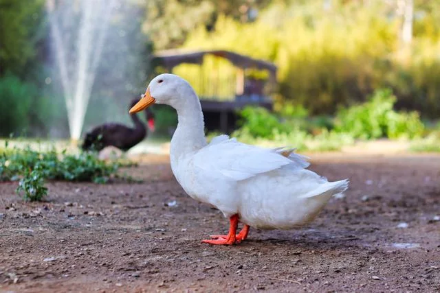

动物在哪里？
听一听，点出你听到的动物。



第 1 题 / 共 6 题
全都找到了！
给大人 · 试玩记录
开始记录后把设备交给孩子。可以在结束前标注有没有给过提示或帮忙点选。
当前浏览器无法保存记录，关闭前可导出 CSV。
从首题出现到第一次选对计时，选错也计时。换图题看第一次点选。首轮和下一轮分别记录主题与玩法。
| 试玩 | 首轮主题 | 首轮玩法 | 首次选对 | 首轮 | 换图首选 | 再玩 |
|---|
听一听，点出你听到的动物。



第 1 题 / 共 6 题
开始记录后把设备交给孩子。可以在结束前标注有没有给过提示或帮忙点选。
当前浏览器无法保存记录，关闭前可导出 CSV。
从首题出现到第一次选对计时，选错也计时。换图题看第一次点选。首轮和下一轮分别记录主题与玩法。
| 试玩 | 首轮主题 | 首轮玩法 | 首次选对 | 首轮 | 换图首选 | 再玩 |
|---|